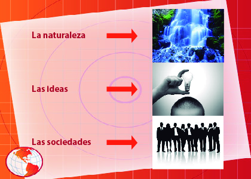

Entorno Socioeconómico de México
Recursos
Audiovisuales
Lecturas
Revise las siguientes lecturas y obtenga los conceptos mas importantes del tema. Busque y apoyese en otras lecturas.
Nociones teóricas y conceptos fundamentales
El conocimiento de elementos teóricos utilizados en los estudios sociales es un instrumento indispensable para la comprensión de los procesos sociales, por este motivo para introducirnos al estudio del Entorno socioeconómico de México, es preciso que estudiemos algunos enfoques teóricos.En la filosofía hay dos grandes elementos que son el ser y la conciencia. El ser se refiere al mundo, la materia, la naturaleza, las sociedades… y la conciencia corresponde a todo lo intangible, a las ideas, “el alma”, las concepciones, el pensamiento, etc., en pocas palabras se refiere a nuestras representaciones mentales.
El filósofo alemán Carlos Marx para estudiar a la sociedad utilizó el término de materialismo pues estableció que la materia es lo primero y la conciencia es un producto de la materia. Los materialistas afirman que el mundo es cognoscible. Podemos decir que el materialismo es una concepción moderna, científica y verdadera del universo. Es un leal auxiliar de la ciencia y de todas las actividades prácticas que ejecuta el hombre.
El materialismo dialéctico
Es la filosofía marxista. Es materialista porque al responder al problema fundamental de la filosofía, sostiene que la materia, el ser, es lo esencial; y la conciencia, lo accesorio. Señala que el mundo es material y cognoscible, concibe al universo tal como lo es en realidad; juzga que el mundo material está en movimiento, desarrollo y cambio constante (permanente).El materialismo dialéctico de Marx estudia las leyes de movimiento en:

Se anexa la segunda lectura en PDF:
Modos de producción:
Concepto básico para el materialismo histórico. Es la unión dinámica entre las fuerzas productivas y las relaciones sociales de producción, determinan la forma de producir de una sociedad históricamente determinada; a esto se le llama estructura económica de la sociedad, que forma lo que también se conoce como modo de producción. Al cambiar y desarrollarse las fuerzas productivas tienen que cambiar necesariamente las relaciones sociales de producción ya sea de forma pacífica o revolucionaria.
Las fuerzas productivas están formadas por la fuerza de trabajo entendida como la aptitud, la capacidad, la habilidad y la fuerza física del hombre, aunada a los medios de producción como son los instrumentos de trabajo y los objetos de trabajo.
Las relaciones sociales de producción son las que se establecen entre los hombres durante el proceso productivo, independientemente de su voluntad.

La propiedad de los medios de producción, la división del trabajo y la distribución de la riqueza son elementos que se encuentran relacionados entre sí y varían de acuerdo al desarrollo de las fuerzas productivas. La ley de la concordancia entre el desarrollo de las “fuerzas productivas” y las “relaciones sociales de producción” se refiere a que, cuando se desarrollan las primeras, consecuentemente se desarrolla la producción y cuando no se desarrollan las fuerzas productivas, entonces se frena el desarrollo de la sociedad. Asimismo, como mencionamos anteriormente, al cambiar y desarrollarse las fuerzas productivas irremediablemente cambiarán las relaciones sociales de producción ya sea pacífica o violentamente. En el transcurso de la historia del hombre, han existido distintos modos de producción desde el punto de vista del materialismo histórico. Estos modos de producción son los siguientes:
Links para otras lecturas interesantes
Ayuda para realizar mapas conceptuales
Cómo hacer un mapa conceptual y herramientas
A continuación, se anexa un ejemplo de como hacer un mapa conceptual.